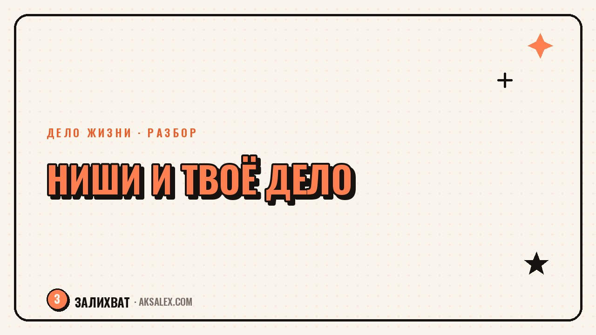

Все ниши заняты: как найти своё дело, если кажется, поздно

Открываешь ленту - и там уже кто-то ведёт блог про то, о чём ты мечтал рассказывать. Смотришь на рынок - и там уже сто компаний делают похожее на твою идею. Возникает мысль: все ниши заняты, поезд ушёл, начинать поздно. Это ощущение знакомо почти каждому, кто думает о своём деле, и оно почти всегда опирается не на факты, а на то, как устроено внимание, когда ты в поиске.
Почему кажется, что всё уже занято
Когда ты думаешь о своей идее, мозг начинает замечать подтверждения того, что она не нужна: чужие успешные проекты, похожие блоги, конкурентов в выдаче. Это особенность внимания, которое ищет аргументы в пользу уже сформированного страха. Ты не замечал этих конкурентов до того, как сам задумался о деле, а теперь видишь их на каждом шагу.
Второй момент - ты видишь чужой результат, а не чужой путь. Блогер с тысячами подписчиков когда-то начинал с нуля, компания с узнаваемым брендом когда-то была стартапом без клиентов. Сравнение себя-в-начале с чужим-результатом-через-годы и есть источник ощущения, что опоздал.
Рынок не делится на занятые и свободные клетки. Он делится на тех, кто делает по-своему, и тех, кто делает так же, как все остальные.
Ниша и твой подход - разные вещи
Одна ниша - много разных предложений
В любой заметной нише уживаются десятки непохожих друг на друга игроков, потому что люди выбирают не только «что», но и «кто» и «как». Психологи работают в одном поле, но у каждого свой стиль, своя манера объяснять, своя аудитория, которой подходит именно его способ говорить о проблемах. То же верно для кондитеров, репетиторов, консультантов по карьере - занятость ниши не означает одинаковость всех, кто в ней работает.
- Твой личный опыт - то, чего нет ни у одного конкурента в точности
- Твой способ объяснять сложные вещи - у каждого он свой
- Твоя аудитория - люди, которым ближе именно твой тон и манера
- Твой набор смежных навыков - редкое сочетание, которое не повторить
Попробуй выписать не «в чём моя идея», а «чем мой подход отличается от того, что я уже видел у других». Разница часто обнаруживается в деталях: формате подачи, скорости ответа, узкой специализации внутри широкой темы.
Как проверить нишу на самом деле, а не по ощущению
Ощущение переполненности рынка редко подтверждается, если проверить его конкретными вопросами, а не общим взглядом на ленту. Вместо «там уже все есть» задай себе более узкие вопросы, которые дают честный ответ, а не эмоциональную реакцию.
| Вопрос себе | Что он показывает | Что делать с ответом |
|---|---|---|
| Кому из моих знакомых это реально было бы нужно? | Есть ли спрос в твоём окружении, а не только в теории | Начни с них - это твои первые клиенты или читатели |
| Что я умею объяснять лучше, чем большинство? | Твоё конкурентное отличие, а не общую нишу | Сделай это центром предложения, а не нишу целиком |
| Чего не хватает в том, что уже есть на рынке? | Пробел, который заметен тебе как бывшему клиенту | Закрой именно этот пробел, а не копируй конкурента |
| Готов ли я начать с малого, не ожидая сразу масштаба? | Реалистичность ожиданий от первого шага | Сними давление «стать лучшим прямо сейчас» |
Что делать, если конкуренция всё же реальная
Бывает и так, что ниша действительно насыщена сильными игроками, и это честно нужно признать. Выход тогда не в поиске свободной клетки рынка - таких почти не остаётся в заметных темах, - а в сужении фокуса до аудитории, которую крупные игроки не замечают.
Например, рынок репетиторов английского перегружен, но репетитор для взрослых, которые боятся ошибиться перед коллегами на созвоне, - это уже узкая и понятная аудитория с конкретной болью. Сужение не делает дело мельче - оно делает его заметнее.
Страх опоздать и как с ним работать
Страх «поздно начинать» редко про реальные сроки и почти всегда про сравнение себя с чужим темпом. У людей, которые уже на виду, обычно за спиной годы попыток, которые ты не видел, потому что они не выкладывали неудачные заходы в ленту. Ты сравниваешь свой старт с чужим пятым или десятым заходом, выдавая его за первый.
Полезное упражнение - написать, что конкретно изменится, если начать сейчас, а не через год раздумий. Часто выясняется, что единственная реальная потеря от ожидания - упущенное время на практику и обратную связь от первых клиентов.
Первый шаг, который не требует готового плана
Не нужно сразу придумывать уникальную нишу и идеальную стратегию - достаточно сделать маленький, проверяемый шаг и посмотреть на реакцию реальных людей, а не на воображаемую конкуренцию. Расскажи о своей идее трём знакомым, оформи один пробный продукт или услугу, напиши один тестовый пост и замерь отклик.
Рынок редко наказывает за попытку - он наказывает за бесконечное ожидание идеального момента. Пока ты сравниваешь себя с чужими результатами, кто-то с похожей идеей уже делает маленький первый шаг - и именно это отличие решает, у кого дело появится раньше.
Частые вопросы
Как понять, что ниша действительно переполнена, а не кажется такой?
Проверь конкретными вопросами: кому из твоего окружения это нужно, чего не хватает в существующих предложениях. Общее ощущение переполненности почти всегда преувеличено по сравнению с реальным спросом.
Можно ли начать своё дело в той же нише, где уже много сильных конкурентов?
Да, если сузить фокус до аудитории или проблемы, которую крупные игроки не замечают. Насыщенность рынка не означает, что в нём нет места для другого подхода и другой манеры подачи.
Что делать, если кажется, что уже поздно начинать своё дело?
Сравни не ощущение, а факты: что конкретно изменится, если начать сейчас, а не через год. Чаще всего единственная реальная потеря от ожидания - упущенное время на практику и обратную связь.
Как найти свою нишу, если интересно сразу несколько направлений?
Начни с того, что умеешь объяснять лучше других, и с аудитории, которая уже есть в твоём окружении. Узкий первый шаг проще оценить, чем попытка закрыть все интересные направления сразу.
Почему чужие успешные проекты вызывают ощущение, что твоя идея не нужна?
Ты видишь результат через годы работы, а не путь с нуля, с ошибками и неудачными попытками, которые не выкладывают в ленту. Это искажает сравнение не в твою пользу.
Раз тема оказалась полезной, вот что почитать следующим. Разбираем, как запустить блог на Substack: настройка, формат писем, подписки и первые читатели.
Читать статью →а не вручную